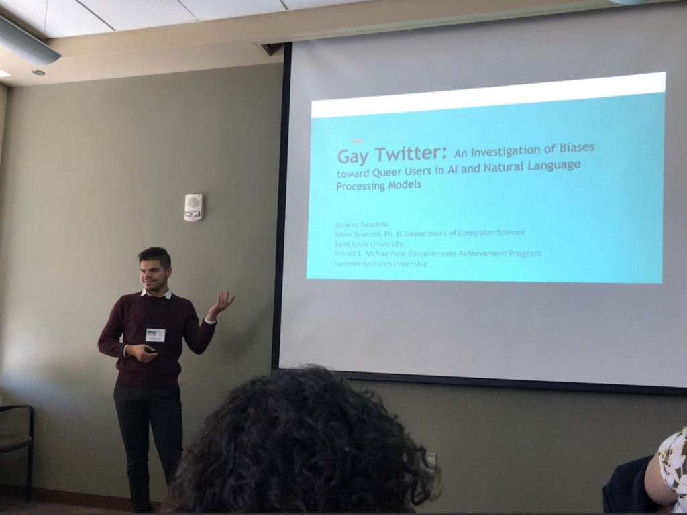

1 / 3
Harris School of Public Policy Graduation. 2021.
2 / 3

University of New Mexico. 2018.
3 / 3

Praia 19 in Costa de Caparica, Portugal. 2021.
Ricardo, raised in the Chicago-land area, lives to serve minoritized communities, in particular, the LGBTQ+ population. Born in Aurora, Illinois, Ricardo has cultivated various perspectives through their education and work experiences. Since a young age, Ricardo gravitated toward technology and quickly fell in love with its potential in changing the world; subsequently, Ricardo went on to pursue their Bachelor of Science in Computer Science from Saint Louis University. Ricardo then began to instruct coding classes, utilizing Google's CS First curriculum, to youth in St. Louis and Ferguson Missouri while completing their undergraduate degree. As a McNair Scholar, Ricardo was able to conduct research and publish their work, Gay Twitter, an exploration of biased algorithms and how they negatively affect LGBTQ+ users' experience on Twitter. Through mentorship and guidance, Ricardo pursued their interest in creating equal spaces and experiences for users online by seeking out further opportunities to engage in this type of work.
Having recently completed their Masters of Public Policy in June 2021 from the Harris School of Public Policy, Ricardo cultivated skills in new areas such as Economics, Policy, and Memo Writing, as well as mastering previous skills such as Data Analysis, Statistics, and Regression Analysis. With their time at Harris, Ricardo served as President for OUTPolitik, Harris' Queer/LGBTQ+ student-led organization advocating for Public Policies and community building for LGBTQ+ members of the greater-Chicago community. Furthermore, Ricardo served as a Data Management Intern for Chicago Public School, serving the Office of Network Support. Ending out their time at Harris, Ricardo served as a Graduate Teaching Assistant for the Technology for Public Policy Spring 2021 course at the Harris School of Public Policy.
Currently seeking employment, Ricardo has many niche talents that are suitable for many work environments. Passionate about using data to make informed decisions, Ricardo enjoys creating informative metrics that can be used for policy, business, or personal use to deliver compelling, clean, and straight-forward demonstrations of any problem at hand. Outside of data analysis and interpretation, Ricardo enjoys networking and creating meaningful connections, volunteering in communities, and challenging their self-perception through various life experiences. When they are not in front of a computer screen, Ricardo fancies staying active, participating in philanthropic activities, reading, cooking, and relaxing by the lake.
For more information about Ricardo, please refer to their CV, or feel free to reach out via their personal email (ricardosauce at gmail dot com).